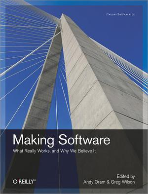

<div class="center padtop"> <h1>Software Engineering's Greatest Hits</h1> <p><img src="../../files/talks/codebender-logo.svg" alt="Third Bit logo" width="20%" /></p> <p>Greg Wilson</p> <p><a href="http://third-bit.com/talks/greatest-hits/">http://third-bit.com/talks/greatest-hits/</a></p> <p><img src="../../files/talks/cc-by.svg" width="20%" alt="CC-BY" /></p> </div> --- ## In the Beginning <img src="ships.jpg" alt="Sailing ships" class="center"> - Seven Years' War (actually lasted nine years) - British lost 1512 sailors to enemy action… - …and almost 100,000 to scurvy --- ## Irony <div class="row"> <div class="col-6 center"> </div> <div class="col-6"> <ul> <li>James Lind (1716–94)</li> <li>1747: first controlled medical experiment</li> </ul> <table> <tr> <td>cider</td> <td>sea water</td> </tr> <tr> <td>vitriol</td> <td>vinegar</td> </tr> <tr> <td>barley water</td> <td>oranges</td> </tr> </table> </div> </div> - Those given oranges survived - Admiralty ignored the result until 1794 --- ## It Took a While <img src="doctors.jpg" alt="Doctors" class="center"> - 1950: Hill & Doll publish a case-control study comparing smokers with non-smokers - Found that smoking causes lung cancer… - …and that many people would rather fail than change --- ## Is Software Engineering? <img src="./engineer-600.jpg" alt="Street Preacher" class="center"> - "The use of the scientific method to design novel things" - So… no --- ## Chickens and Eggs <img src="../../files/talks/blind-leading-blind.png" alt="The blind leading the blind" class="center"> - We know a lot about software and how it's built - But students aren't taught methods or results in school - And we're all too busy to learn them later --- ## We Can Do Better - Steady growth of empirical studies over 30 years - Fueled in part by data from open source projects - Many studies are small, and not all are well done - But we can refute some myths and reveal new insights <img src="./icse-2023.png" alt="ICSE 2023" width="80%" class="center"> --- ## Are Some Languages Better? <a href="#Stefik2013">Stefik2013</a>: "An Empirical Investigation into Programming Language Syntax" - Measured how easily novices could read: - Perl - Quorum: the language their team is building - Randomo: syntax "designed" by rolling D&D dice - Perl is as hard for novices to learn as a language with a randomly-designed syntax --- ## Are Some Languages Better? - Second study - More subjects - Multiple assessment strategies - Languages in the C family are as hard for novices to learn to read as a randomly-designed language - Ruby and Python are significantly easier - Quorum is easier still --- ## Productivity - <a href="#Prechelt2000">Prechelt2000</a> had programmers implement the same thing in the language of their choice - How long did it take? <img src="productivity.svg" class="center"> --- ## Productivity - Shortest and longest times were 0.6 and 63 hours - Ratio is 150X (!) - But people used 7 different languages - If we only look at Java, times are 3.8 vs. 63 hours (17X) - But comparing best and worst exaggerates differences - 90th percentile vs. 50th gives 3.7X --- ## Test-Driven Development <a href="#Shull2010">Shull2010</a>: "How Effective is Test-Driven Development?" > …evidence from controlled experiments suggests an > improvement in productivity when TDD is used. > However…pilot studies provide mixed evidence, some in > favor of and others against TDD. In the industrial > studies…evidence suggests that TDD yields worse > productivity. Even when considering only the more rigorous > studies…the evidence is equally split for and against a > positive effect. --- ## Test-Driven Development <a href="#Fucci2016">Fucci2016</a>: "An External Replication on the Effects of Test-driven Development Using a Multi-site Blind Analysis Approach" - Replication study, 39 professionals, real projects - No significant difference between test-first and test-last development - "The claimed benefits of TDD may…rather [be] due to the fact that [it] encourages fine-grained steady steps that improve focus and flow." -- > I practice TDD…and it works great. We don't need to prove that it works anymore. --- ## Nobody Knows Anything <a href="#Altadmri2016">Altadmri2016</a>: "37 Million Compilations: Investigating Novice Programming Mistakes in Large-Scale Student Data" - Ask educators for learners' most common mistakes - Compare their answers to empirical data - Weak consensus among educators - Weak correlation with observations - Educator experience had only weak impact on results --- ## Nobody Knows Anything Most common actual errors are: - Mis-matched parentheses (*not* confusing `=` with `==`) - Invoking methods with the wrong arguments - Reaching end of non-`void` method without `return` The three that take the most time to fix are: - Confusing short-circuit logical and bitwise operators - Using `==` instead of `.equals` to compare strings - Ignoring the return value from a non-void method --- ## A Caution <a href="#Begel2014">Begel2014</a>: "Analyze This! 145 Questions for Data Scientists in Software Engineering" - Ask a bunch of developers to propose questions, then ask another bunch to rate them - Developers want to know how people actually use their products - They *don't* want assessments of individual performance - Because they're afraid such measures will be weaponized --- ## Open Source <a href="#Steinmacher2015">Steinmacher2015</a>: "Social Barriers Faced by Newcomers Placing Their First Contribution in Open Source Software Projects" - Identify 58 potential barriers - What matters most? 1. How easy it is to get set up to make a contribution 1. How easy it is to find a task to start with - Other work has also identified "how warmly first contribution was received" --- ## There Is No "Geek Gene" <a href="#Patitsas2016">Patitsas2016</a>: "Computer Science Grades Are Not Bimodal" - The "geek gene" is computing's most enduring and damaging myth - In fact, only 5.8% of course grade distributions at a large university were actually multi-modal - But CS faculty are more likely to see distributions as bimodal if they think they're from a CS class - Even *more* likely if they believe some students are innately predisposed to do well in CS --- ## Code Metrics - Lots of code metrics have been proposed - Halstead's measures - Cyclomatic complexity - Many object-oriented measures - But nothing works better than counting lines of code - <a href="#ElEmam2001">ElEmam2001</a>: "Confounding Effects of Class Size on the Validity of Object-Oriented Metrics" - <a href="#Herraiz2010">Herraiz2010</a>: "Beyond Lines of Code: Do We Need More Complexity Metrics?" --- ## Test Flakiness <a href="#Costa2022">Costa2022</a>: "Test Flakiness Across Programming Languages" --- ## Who Fixes What? - Original authors fix their own simple bugs much faster than other people (<a href="#Zhu2021">Zhu2021</a>) - But are more likely to fix or change other things at the same time <div class="row"> <div class="col-6 center"> <img src="bug-fix-time.png" alt="Bug fix time"> </div> <div class="col-6 center"> <img src="bug-fix-churn.png" alt="Bug fix churn"> </div> </div> --- ## Language Features <div class="row"> <div class="col-12 center"> <br> From [<a href="#Scarsbrook2023">Scarsbrook2023</a>] </div> </div> - Nobody knows anything… --- ## Miscellaneous - Design patterns - Teaching people design patterns makes them better programmers (<a href="#Tichy2010">Tichy2010</a>) - Three experiments demonstrated cause and effect - This is *not* obvious - Maybe good programmers are just more likely to use patterns - Fuzz testing - Invented by accident in 1988 (<a href="#Miller2021">Miller2021</a>) - 25-33% of Unix utilities crashed when fuzzed - Thirty years later, "only" 12-20% still crash - [*The Fuzzing Book*](https://www.fuzzingbook.org/) --- ## Miscellaneous - Strong typing catches about 15% of bugs (<a href="#Gao2017">Gao2017</a>) - Which is a lot or a little depending on your point of view - Only 6-17% of configuration options are set by most users (<a href="#Xu2015">Xu2015</a>) - Only 2%-8% of parameters are configured by more than 90% of users - Secret management is a solved problem - But most developers don't know the solutions (<a href="#Basak2023">Basak2023</a>) --- ## What Hasn't Worked? - People have tried explaining all of this before <div class="row"> <div class="col-3"><img src="./rapid-development.jpg" width="70%"></div> <div class="col-3"></div> <div class="col-3"></div> </div> <div class="center"> <a href="https://neverworkintheory.org/"><strong>https://neverworkintheory.org/</strong></a> </div> --- ## What Might? - Start with a little data science - Using software engineering datasets (because people learn best when examples are relevant) - And Python (because computer science students will probably already know it) - Academically defensible ("Look, math!") - And attractive to students - Then replicate a few simple results - At this point, students will be able to understand and assess the claims --- ## When We're Done **Assignment #3** > Given version control repositories for six software > projects, determine whether long functions are > more likely to be buggy than short ones. - Requires tool use, model building, and statistics - Require students to *do* science - So they *understand* it - So they *value* it --- ## Conclusions <img src="./wikipedian_protester.png" class="center"> - The world needs more of this - What are you waiting for? --- ## Thank You <div class="center"> <p><img src="../../files/talks/gvwilson.png" width="40%"></p> <p><a href="http://third-bit.com">Greg Wilson</a></p> <p><a href="mailto:gvwilson@third-bit.com">gvwilson@third-bit.com</a></p> <p><a href="http://third-bit.com/talks/greatest-hits/">http://third-bit.com/talks/greatest-hits/</a></p> </div> --- ## Bibliography <div class="bibliography"> <p id="Altadmri2015">[Altadmri2015] Amjad Altadmri and Neil C.C. Brown: "37 Million Compilations". <em>SIGCSE'15</em>, <a class="doi" href="https://doi.org/10.1145/2676723.2677258">10.1145/2676723.2677258</a>. </p> <p id="Basak2023">[Basak2023] Setu Kumar Basak, Lorenzo Neil, Bradley Reaves, and Laurie Williams. "What challenges do developers face about checked-in secrets in software artifacts?" 2023. <a class="doi" href="https://arxiv.org/abs/2301.12377">arXiv:2301.12377</a>. </p> <p id="Begel2014">[Begel2014] Andrew Begel and Thomas Zimmermann: "Analyze this! 145 questions for data scientists in software engineering". <em>ICSE'14</em>, <a class="doi" href="https://doi.org/10.1145/2568225.2568233">10.1145/2568225.2568233</a>. </p> <p id="Costa2022">[Costa2022] Keila Costa, Ronivaldo Ferreira, Gustavo Pinto, Marcelo d'Amorim, and Breno Miranda: "Test flakiness across programming languages." <em>IEEE Trans. Software Engineering</em>, 2022, <a class="doi" href="https://doi.org/10.1109/tse.2022.3208864">10.1109/tse.2022.3208864</a>. </p> <p id="DaCosta2017">[DaCosta2017] Daniel Alencar da Costa, Shane McIntosh, Christoph Treude, Uirá Kulesza, and Ahmed E. Hassan: "The impact of rapid release cycles on the integration delay of fixed issues". <em>Empirical Software Engineering</em>, 2017, <a class="doi" href="https://doi.org/10.1007/s10664-017-9548-7">10.1007/s10664-017-9548-7</a>. </p> </div> --- ## Bibliography <div class="bibliography"> <p id="ElEmam2001">[ElEmam2001] Khaled El Emam, Saïda Benlarbi, Nishith Goel, and Shesh N. Rai: "The Confounding Effect of Class Size on the Validity of Object-Oriented Metrics". <em>IEEE Trans. Software Engineering</em>, 2001, <a class="doi" href="https://doi.org/10.1109/32.935855">10.1109/32.935855</a>. </p> <p id="Fucci2016">[Fucci2016] Davide Fucci, Giuseppe Scanniello, Simone Romano, Martin Shepperd, Boyce Sigweni, Fernando Uyaguari, Burak Turhan, Natalia Juristo, and Markku Oivo: "An External Replication on the Effects of Test-driven Development Using a Multi-site Blind Analysis Approach". <em>ESEM'16</em>, <a class="doi" href="https://doi.org/10.1145/2961111.2962592">10.1145/2961111.2962592</a>. </p> <p id="Gao2017">Zheng Gao, Christian Bird, and Earl T. Barr: "To type or not to type: quantifying detectable bugs in JavaScript." <em>ICSE'17</em>, <a class="doi" href="https://doi.org/10.1109/icse.2017.75">10.1109/icse.2017.75</a> </p> <p id="Herraiz2010">[Herraiz2010] Israel Herraiz and Ahmed E. Hassan: "Beyond Lines of Code: Do We Need More Complexity Metrics?". In Andy Oram and Greg Wilson (eds.): <em>Making Software.</em> O'Reilly, 2010, 0596808321. </p> </div> --- ## Bibliography <div class="bibliography"> <p id="Kim2023">[Kim2023] Jinhan Kim, Jongchan Park, and Shin Yoo: "The inversive relationship between bugs and patches: an empirical study." 2023. <a class="doi" href="https://arxiv.org/abs/2303.00303">arXiv:2303.00303</a>. </p> <p id="McIntosh2021">[McIntosh2021] Lukas McIntosh and Caroline D. Hardin: "Do Hackathon Projects Change the World? An Empirical Analysis of GitHub Repositories". <em>SIGCSE'21</em>, <a class="doi" href="https://doi.org/10.1145/3408877.3432435">10.1145/3408877.3432435</a>. </p> <p id="Miller2020">[Miller2020] Barton Miller, Mengxiao Zhang, and Elisa Heymann: "The Relevance of Classic Fuzz Testing: Have We Solved This One?". <em>IEEE Trans. Software Engineering</em>, 2020, <a class="doi" href="https://doi.org/10.1109/tse.2020.3047766">10.1109/tse.2020.3047766</a>. </p> <p id="Nakshatri2016">[Nakshatri2016] Suman Nakshatri, Maithri Hegde, and Sahithi Thandra: "Analysis of exception handling patterns in Java projects". <em>MSR'16</em>, <a class="doi" href="https://doi.org/10.1145/2901739.2903499">10.1145/2901739.2903499</a>. </p> <p id="Palomba2021">[Palomba2021] Fabio Palomba, Damian Andrew Tamburri, Francesca Arcelli Fontana, Rocco Oliveto, Andy Zaidman, and Alexander Serebrenik: "Beyond Technical Aspects: How Do Community Smells Influence the Intensity of Code Smells?". <em>IEEE Trans. Software Engineering</em>, 2021, <a class="doi" href="https://doi.org/10.1109/tse.2018.2883603">10.1109/tse.2018.2883603</a>. </p> </div> --- ## Bibliography <div class="bibliography"> <p id="Patitsas2016">[Patitsas2016] Elizabeth Patitsas, Jesse Berlin, Michelle Craig, and Steve Easterbrook: "Evidence That Computer Science Grades Are Not Bimodal". <em>ICER'16</em>, <a class="doi" href="https://doi.org/10.1145/2960310.2960312">10.1145/2960310.2960312</a>. </p> <p id="Prechelt2000">[Prechelt2000] Lutz Prechelt: "An Empirical Comparison of Seven Programming Languages". <em>IEEE Computer</em>, 2000, <a class="doi" href="https://doi.org/10.1109/2.876288">10.1109/2.876288</a>. </p> <p id="Scarsbrook2023">[Scarsbrook2023] Joshua D. Scarsbrook, Mark Utting, and Ryan K. L. Ko: "Typescript's evolution: an analysis of feature adoption over time." 2023, <a href="https://arxiv.org/abs/2303.09802">arXiv:2303.09802</a>. </p> <p id="Shull2010">[Shull2010] Forrest Shull, Grigori Melnik, Burak Turhan, Lucas Layman, Madeline Diep, and Hakan Erdogmus: "What Do We Know about Test-Driven Development?". <em>IEEE Software</em>, 2010, <a class="doi" href="https://doi.org/10.1109/ms.2010.152">10.1109/ms.2010.152</a>. </p> <p id="Stefik2013">[Stefik2013] Andreas Stefik and Susanna Siebert: "An Empirical Investigation into Programming Language Syntax". <em>ACM Trans. Computing Education</em>, 2013, <a class="doi" href="https://doi.org/10.1145/2534973">10.1145/2534973</a>. </p> </div> --- ## Bibliography <div class="bibliography"> <p id="Steinmacher2015">[Steinmacher2015] Igor Steinmacher, Tayana Conte, Marco Aurélio Gerosa, and David Redmiles: "Social Barriers Faced by Newcomers Placing Their First Contribution in Open Source Software Projects". <em>CSCW'15</em>, <a class="doi" href="https://doi.org/10.1145/2675133.2675215">10.1145/2675133.2675215</a>. </p> <p id="Tichy2010">[Tichy2010] Walter Tichy: "The Evidence for Design Patterns". In Andy Oram and Greg Wilson (eds.): <em>Making Software.</em> O'Reilly, 2010, 0596808321. </p> <p id="Wessel2020">[Wessel2020] Mairieli Wessel, Alexander Serebrenik, Igor Wiese, Igor Steinmacher, and Marco A. Gerosa: "Effects of Adopting Code Review Bots on Pull Requests to OSS Projects". <em>ICSME'20</em>, <a class="doi" href="https://doi.org/10.1109/icsme46990.2020.00011">10.1109/icsme46990.2020.00011</a>. </p> <p id="Xu2015">[Xu2015] Tianyin Xu, Long Jin, Xuepeng Fan, Yuanyuan Zhou, Shankar Pasupathy, and Rukma Talwadker: "Hey, you have given me too many knobs!: understanding and dealing with over-designed configuration in system software". <em>FSE'15</em>, <a class="doi" href="https://doi.org/10.1145/2786805.2786852">10.1145/2786805.2786852</a>. </p> </div> --- ## Bibliography <div class="bibliography"> <p id="Yuan2014">[Yuan2014] Ding Yuan, Yu Luo, Xin Zhuang, Guilherme Renna Rodrigues, Xu Zhao, Yongle Zhang, Pranay U. Jain, and Michael Stumm: "Simple testing can prevent most critical failures: an analysis of production failures in distributed data-intensive systems". <em>OSDI'14</em>, <a class="doi" href="https://doi.org/10.13140/2.1.2044.2889">10.13140/2.1.2044.2889</a>. </p> <p id="Zhu2021">[Zhu2021] Wenhan Zhu and Michael W. Godfrey: "Mea culpa: How developers fix their own simple bugs differently from other developers". <em>MSR'21</em>, <a class="doi" href="https://doi.org/10.1109/msr52588.2021.00065">10.1109/msr52588.2021.00065</a>. </p> <p id="Zieris2020">[Zieris2020] Franz Zieris and Lutz Prechelt: "Two Elements of Pair Programming Skill". <em>ICSE'20</em>, <a class="doi" href="https://doi.org/10.1109/ICSE-NIER52604.2021.00019">10.1109/ICSE-NIER52604.2021.00019</a>. </p> </div>